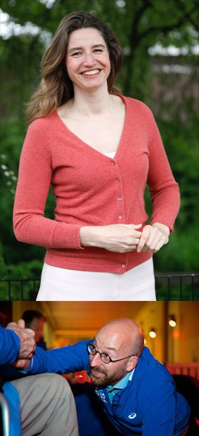

De Sociale Sportschool
De Sociale Sportschool combineert een serieuze work-out met een sociale component: sporters gaan met ouderen in een rolstoel of met een rollator samen op bootcamp. Rolstoelen worden als fitnessapparaten gebruikt. De oefeningen zijn voor de sporters fysiek uitdagend. Ze worden aangemoedigd en ondersteund door de ouderen die naar vermogen gelijktijdig lichte oefeningen doen.
De Sociale Sportschool is succesvol gestart in ’s-Hertogenbosch en uitgegroeid tot een landelijk platform waar zorgen welzijnsorganisaties, sportclubs en trainers zich bij aan kunnen sluiten. Samen zorgen zij voor een structureel bootcamp aanbod voor ouderen en sporters.
Hoe het begon
De Sociale Sportschool is bedacht door het kunstenaarsduo Sjaak Langenberg & Rosé de Beer. Het is voortgekomen uit het programma Re-inventing Happiness van het Stedelijk Museum ‘s-Hertogenbosch.
Onze projectleiders
Tom Naberink en Karim el Barkaoui zijn beiden actief als projectleider voor de Sociale Sportschool. Zij zijn het eerste aanspreekpunt voor huidige en toekomstige partners.
Tom Naberink behaalde cum laude zijn Master of Science Sociologie aan de Radboud Universiteit. Hij is docent-onderzoeker Sporteconomie en Strategisch Sportmanagement bij de HAN (Hogeschool Arnhem en Nijmegen). In Nijmegen geeft hij les aan de opleiding Sportkunde. Tom wil een aantal Living Labs opzetten. In die Living Labs onderzoekt hij wat ervoor nodig is om een succesvolle Sociale Sportschool bootcamplocatie te realiseren en hij onderzoekt de maatschappelijke waarde van de Sociale Sportschool bootcamps en de impact op de deelnemers. Zo wordt een gedegen fundament gelegd voor de groei van de Sociale Sportschool.
Karim el Barkaoui is vanuit vanuit Zorgbelang Brabant|Zeeland projectleider van de Sociale Sportschool. Karim heeft ruime ervaring met het ondersteunen van maatschappelijke innovaties als projectleider en adviseur in het sociale domein. Zo organiseerde hij in het programma 'Sociale Veerkracht' met 7 sportloketten co-creatiesessies met sportcoaches, zorgprofessionals, ondersteuners (ouders/mantelzorgers) en mensen met een beperking. Karim vindt het belangrijk dat iedereen, ondanks ziekte, beperking, ouderdom of minder zelfredzaamheid, mee kan blijven doen aan de snel veranderende maatschappij. In zijn vrije tijd is hij voetbaltrainer en voetbalt hij zelf.
Sjaak Langenberg & Rosé de Beer
Het kunstenaarsduo Sjaak Langenberg & Rosé de Beer ontwikkelt kunstprojecten in een maatschappelijke context. Door ogenschijnlijk tegengestelde werelden met elkaar te verbinden creëren zij nieuwe speelruimte. Het kunstenaarsduo houdt zich bezig met de vormgeving, pr en inhoudelijke regie van het Sociale Sportschool programma.
Ambassadeurs
Sharon Gesthuizen
De maatschappelijk geëngageerde Sharon Gesthuizen is de eerste ambassadeur van de Sociale Sportschool. Zij werd onder andere opgeleid als kunstenaar aan de Hogeschool voor de Kunsten in Arnhem, en zat elf jaar in de Tweede Kamer. De combinatie sport - cultuur - zorg spreekt haar aan. Zij liep een aantal keer de 40 kilometer van Rotterdam naar Rotterdam tijdens de Nacht van de Vluchteling, en beoefende sharobics, naar eigen zeggen een soort mengvorm van kunst en sport. Kortom: een ideale ambassadeur voor de Sociale Sportschool. (foto Bart Maat)
Robert van Rijssel
“Als zelfstandig adviseur help ik graag relevante organisaties om concrete doelen te realiseren. Anderen daarbij in eigenaarschap helpen groeien en samen social impact creëeren, is het mooiste wat er is. Daarom draag ik ook de Sociale Sportschool een warm hart toe en ben ik trots om ambassadeur van deze beweging te mogen zijn. (foto Marloes Kemps for Life fotografie)
Noël Josemans
Sociaal Maatschappelijk Projectontwikkelaar Noël Josemans heeft geholpen om het het concept van de Sociale Sportschool uit te werken tot een landelijk platform met een duurzaam karakter.
De Stichting
Om het landelijk platform te waarborgen en ondersteunen is de stichting Sociale Sportschool opgericht. Met dank aan OWK Notarissen.
Youri Wladimirov
Trainer Youri Wladimirov heeft het eerste trainingsprogramma voor de Sociale Sportschool ontwikkeld. Deze oefeningen dienen als basis voor de bootcamps, en kunnen naar eigen inzicht door trainers van andere sportclubs worden uitgebreid. Voorop staat dat de sporters een serieuze work-out krijgen en de ouderen naar eigen vermogen op een veilige manier meedoen.